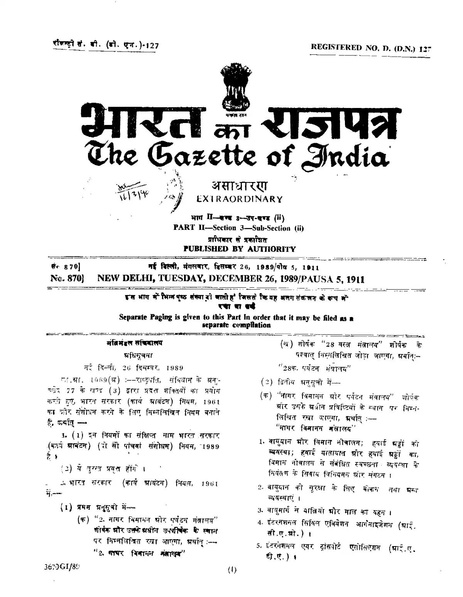
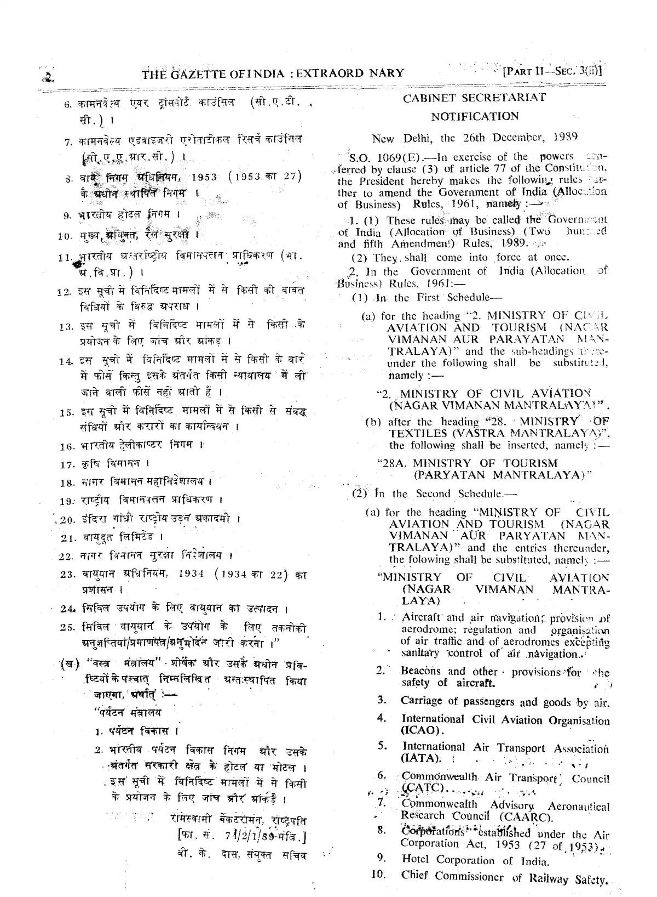
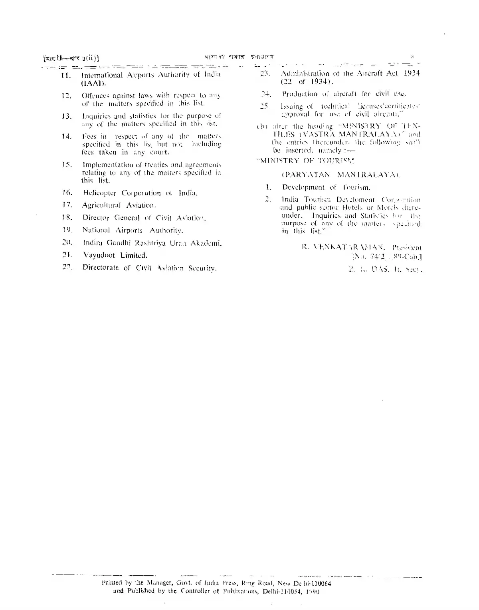

Amendment #205 (S.O. 1069(E), 1989)
4 changes: 2 to the First Schedule, 2 to the Second Schedule. 4 applied
What it did to the ministries
- splitMinistry of Civil Aviation and Tourism splits into Ministry of Civil Aviation (25) and Ministry of Tourism (2) change 1, 2, 3, 4 · histories: Civil Aviation and Tourism, Civil Aviation, Tourism
The order, page by page
Page 1 of 4

Page 2 of 4

123Schedule 1 › MINISTRY OF CIVIL AVIATION AND TOURISM
- 2. MINISTRY OF CIVIL AVIATION
applied at schedule 1 › ministry 1A in the Rules after #205
after Schedule 1 › MINISTRY OF TEXTILES
- 28A. MINISTRY OF TOURISM
applied at schedule 1 › ministry 28A in the Rules after #205
Schedule 2 › MINISTRY OF CIVIL AVIATION AND TOURISM
- MINISTRY OF CIVIL AVIATION (NAGAR VIMANAN MANTRA- LAYA)
- 1. Aircraft and air navigation, provision of aerodrome; regulation and organisation of air traffic and of aerodromes excepting sanitary 'control of air navigation..
- 2. Beacons and other provisions for the safety of aircraft.
- 3. Carriage of passengers and goods by air.
- 4. International Civil Aviation Organisation (ICAO).
- 5. International Air Transport Association (IATA).
and 20 more
- 6. Commonwealth Air Transport Council ·· · ; . (CATC)..
- 7. Commonwealth Advisory Aeronautical Research Council (CAARC).
- 8. Corporations established under the Air Corporation Act, 1953 (27 of 1953)
- 9. Hotel Corporation of India.
- 10. Chief Commissioner of Railway Safety.
- 11. International Airports Authority of India (IAA]).
- 12. Offences against laws with respect to any of the matters specified in this list.
- 13. Inquiries and statistics for the purpose of any of the matters specified in this list.
- 14. Fees in respect of any of the matters specified in this list but not including fees taken in any court.
- 15. Implementation of treaties and agreements relating to any of the matters specified in this list.
- 16. Helicopter Corporation of India.
- 17. Agricultural Aviation.
- 18. Director General of Civil Aviation.
- 19. National Airports Authority.
- 20. Indira Gandhi Rashtriya Uran Akademi.
- 21. Vayudoot Limited.
- 22. Directorate of Civil Aviation Security. ==
- 23. Administration of the Aircraft Act. 1934 (22 of 1934).
- 24. Production of aircraft for civil use.
- 25. Issuing of technical licenses/certificates approval for use of civil airerunt
applied at schedule 2 › ministry MINISTRY OF CIVIL AVIATION AND TOU- RISM in the Rules after #205
read page break
Page 3 of 4

4after Schedule 2 › MINISTRY OF TEX- TILES
- MINISTRY OF TOURISM
- 1. Development of Fourism.
- 2. India Tourism Develoment Corpurition and public sector Hotels or Motels dereunder. Inquiries and Statistics for the purpose of any of the matters spacined in this list.
applied at schedule 2 › ministry MINISTRY OF TOURISM in the Rules after #205
Page 4 of 4
How this document was read
From the Government of India (Allocation of Business) Rules, 1961 and their amendments, as published by the Cabinet Secretariat (cabsec.gov.in), read by orgpedia. The readings of the older scanned gazettes have known gaps.